ء-حماية e-Himaya
تقرير المرحلة L4: نافذة أصحاب القرار (الوضع الآن، البحث، المقارنة، التفويض، القاموس)، وروزنامة مكتبة الأحداث بستة مستويات (L4a)، والبحث في الموارد داخل حيّز المحور (RS1)، ووضعيات نشاط البرمجة، وصلاحيات مدير النظام، والمسارات حول الحادث
1. أين تقع هذه المرحلة من مسار المشروع
التبليغ
←
المعالجة
←
التحليل
←
مؤشرات الأداء KPI
←
التنبؤ بالذكاء الاصطناعي
←
اتخاذ القرار
- المعالجة: وضعيات نشاط البرمجة تتغير بالتوقيت أو باليد، والوحدات المقترحة للحادث مرتبة بزمن الطريق، ومسار المستشفى مرسوم على الخريطة.
- التحليل ومؤشرات الأداء: الروزنامة من اليوم إلى السنة بتدرّج اللون، وتحتها مؤشرات الفترة؛ والبحث والمقارنة في نافذة القرار.
- اتخاذ القرار: نافذة واحدة لأصحاب القرار، «الوضع الآن» والموارد داخل حيّز المحور، مع ملخص مكتوب استشاري يحمل وسم الذكاء الاصطناعي.
2. مراجعة ← تصميم ← تطوير
الطلب: البند 11 (نافذة أصحاب القرار) والبند 6 (الروزنامة بالسنة والسداسي والثلاثي والشهر والأسبوع واليوم). أجاب يامن عن أسئلة التصميم الأربعة (التفويض، القاموس بالدارجة، التقارير، وضعيات النشاط)، ثم أضاف: مدير النظام هو المفوض الأساسي لكل الصلاحيات، واختار أن «تبقى سقفا ثابتا» قواعد الأمن. ووافق على أربع نقاط للذكاء الاصطناعي «حسب الأولوية» مع «اترك ما توصلنا إليه والذكاء الاصطناعي يساعد ويقترح»، وعلى ترتيب الوحدات بزمن الطريق ورسم المسار.
الأمن: النافذة مجمّعة دائما: لا مبلّغ ولا هاتف ولا ضحية ولا عنوان، والخانات دون الحد تُعرض «<5». نطاقها من الدور والولاية، والتفويض يقصرها على الأحداث المختارة دون الموارد ولا البحث بالكلمات الحرة. الطبقات الحساسة لا تمر بها، ولا يراها الوالي ولو كان المحور مفتوحا. البحث في الموارد داخل الحيّز يقرأ المحور بأمن مستوى الصفوف للسائل، فمحور ولاية أخرى غير موجود بالنسبة له. قواعد مدير النظام تُطبَّق في الخادم على كل مسار، والسقف الثابت يرفض كل منح يتجاوزه. الملخص المكتوب يتلقى الأعداد المجمّعة وحدها، ويُرفض إن ذكر رقما ليس منها. كل منح وسحب وفتح مفوَّض وتصدير وملخص مسجَّل في التدقيق.
L4b: نافذة أصحاب القرار
- الوضع الآن: المحاور المفتوحة بمستواها ومخططها الساري، التدخلات المفتوحة حسب الخطورة، الموارد المتاحة والمشغولة والمعطلة، نسبة إنجاز البرمجة لكل ولاية، آخر القرارات، ورابط «الموارد في الحيّز» لكل محور.
- البحث: سطر واحد بالكلمات العادية أو بالدارجة، يعرض كيف فُهم، مع المرشحات؛ المؤشرات والرسوم وقائمة تدخلات دون شخص؛ البحوث المحفوظة؛ التصدير PDF و Excel.
- المقارنة بين فترتين أو ولايتين، كل مؤشر بقيمتيه والفرق ملونا بحسب الأسوأ.
- التفويض بسبب ومدة وأحداث مختارة، يضاف إليه ويُسحب؛ وقاموس المرادفات تضبطه القاعة المركزية.
- الملخص المكتوب الاستشاري للبحث وللمقارنة (§9 البند 1).
L4a: روزنامة مكتبة الأحداث
- ستة مستويات: اليوم بالساعات، الأسبوع والشهر بالأيام، الثلاثي بالأسابيع، السداسي والسنة بالأشهر؛ السابق والموالي، والنقر ينزل إلى المستوى الأدق، واليوم يفتح قائمته.
- تدرّج اللون بحسب العدد مع مفتاح الألوان؛ وتحت الروزنامة مؤشرات تدخلات الفترة لأدوار الإحصاء ورابط الخريطة الحرارية للفترة نفسها.
البقية
- وضعيات نشاط البرمجة السبع، آليا بالتوقيت أو يدويا بسبب، مع من وضعها.
- صلاحيات مدير النظام: صفحة «الصلاحيات» بشجرة الفهرس والقواعد السارية ومعاينة ما يراه حساب.
- المسارات حول الحادث: الوحدات المقترحة بزمن الطريق، وزر «المسار» للمستشفى وللوحدة.
- RS1: تبويب «الموارد» في لوحة المحور يبحث داخل حيّز المحور وفروعه بهامش حتى 50 كم، وإن لم يُرسم حيّز ففي ولاياته.
3. لقطات [SIM]
نافذة القرار لرئيس القاعة المركزية: الوضع الآن نهارا، والبحث ليلا ونهارا مع المؤشرات، والمقارنة:
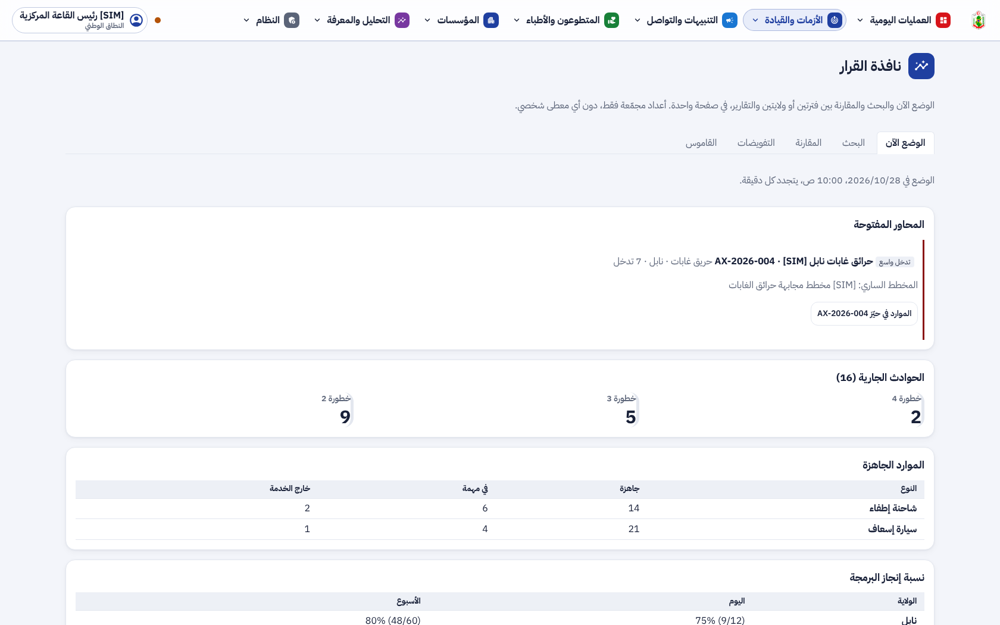
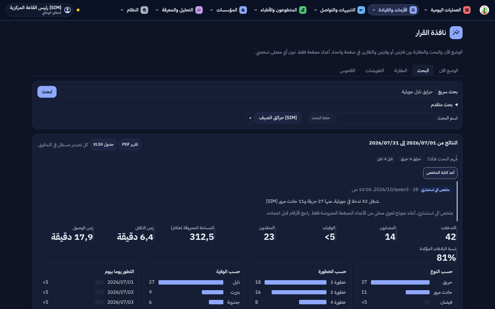
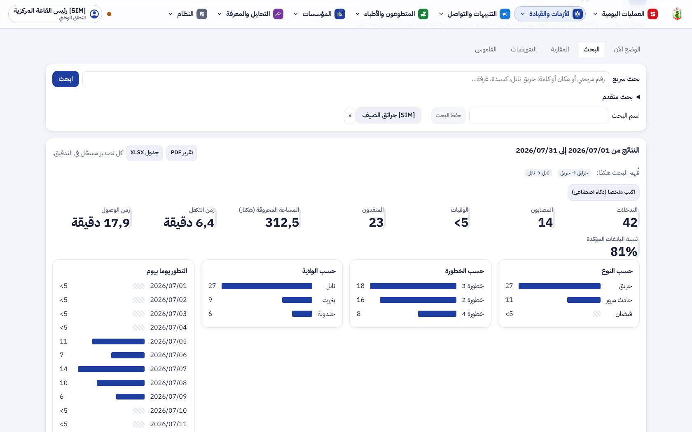
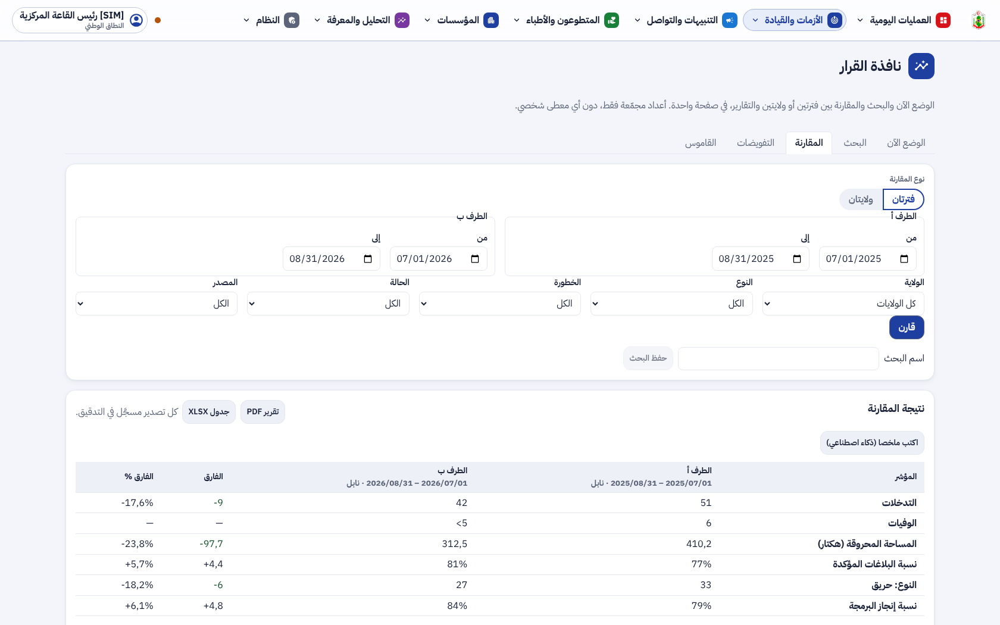
التفويضات وما يراه المفوَّض له، وقاموس المرادفات:
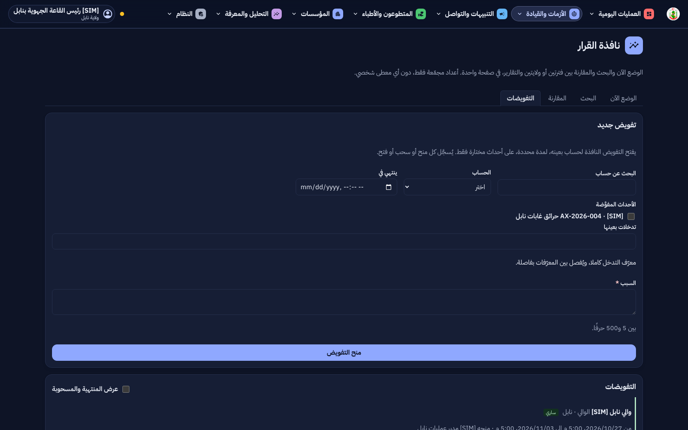
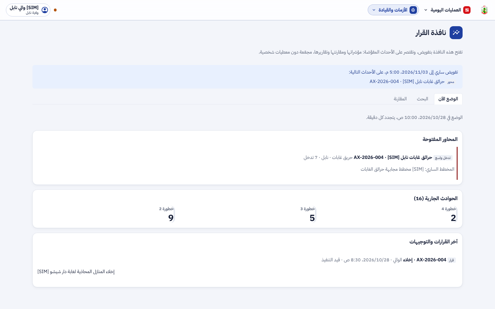
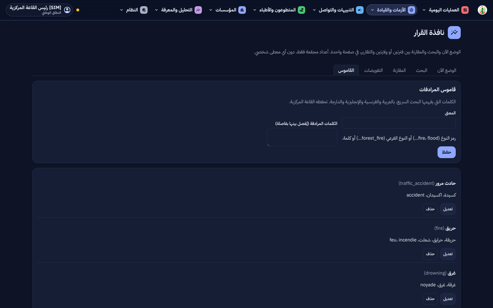
روزنامة مكتبة الأحداث: الشهر والسنة واليوم، ومؤشرات الفترة:
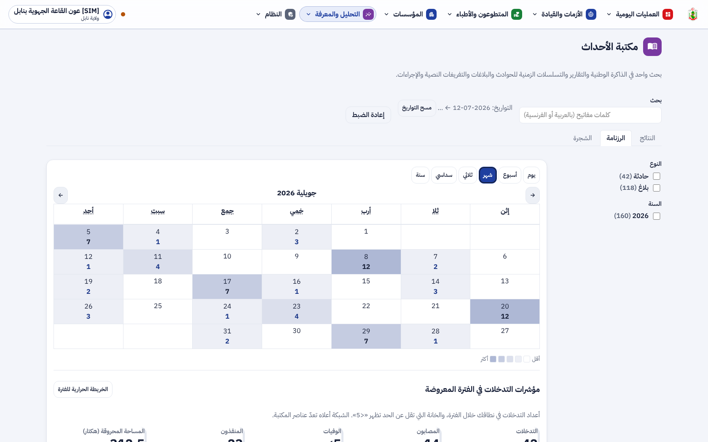
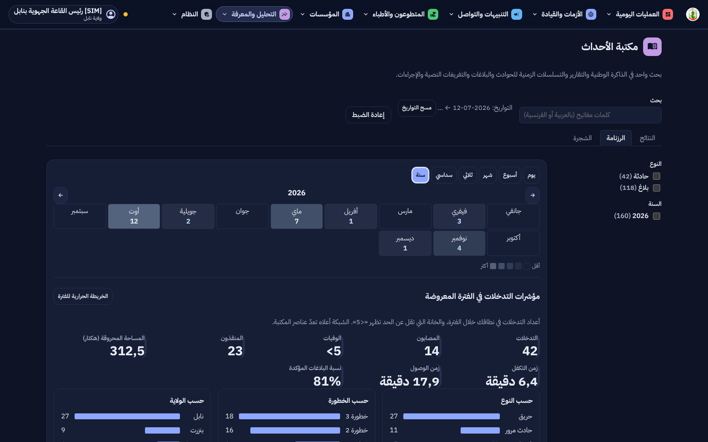
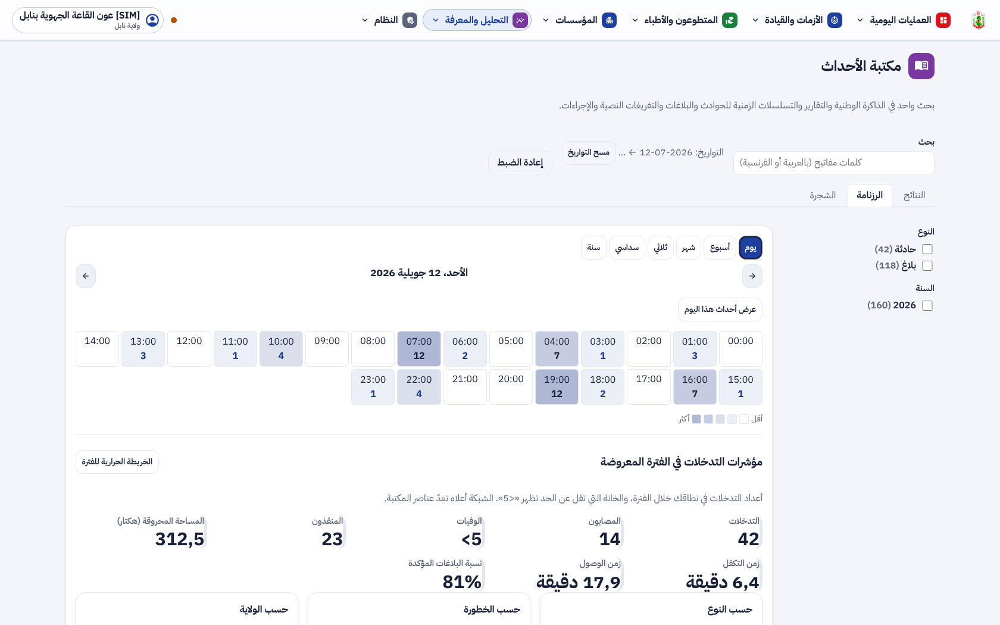
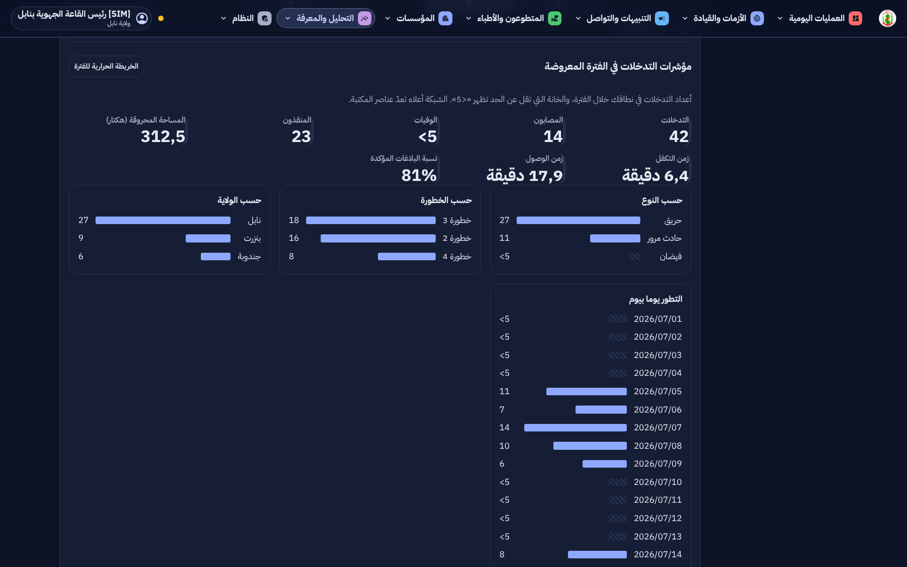
الموارد داخل حيّز المحور، وصفحة الصلاحيات لمدير النظام:
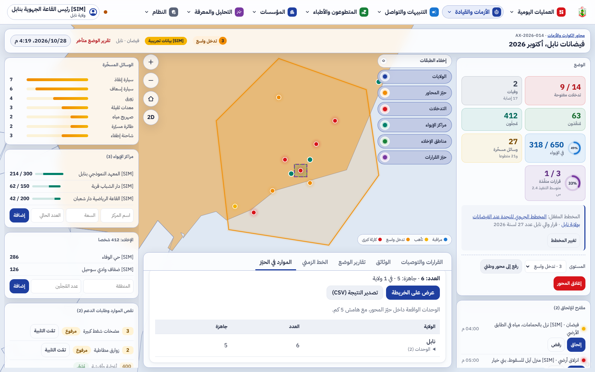
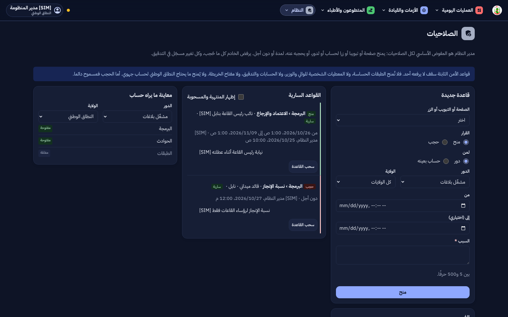
4. التقدم لكل جزء
| البند | الحالة | التقدم |
|---|
| F-DSH-79 الوضع الآن | منجز (L4b) |
|
| F-DSH-80 البحث والمؤشرات والبحوث المحفوظة | منجز (L4b) |
|
| F-DSH-81 المقارنة والتصدير | منجز (L4b) |
|
| F-DSH-82 الملخص المكتوب الاستشاري | منجز (L4b) |
|
| F-DSH-83 التفويض | منجز |
|
| F-DSH-84 قاموس المرادفات | منجز |
|
| F-DSH-85 الروزنامة بستة مستويات ومؤشرات الفترة | منجز (L4a) |
|
| F-DSH-86 الوضعيات، الصلاحيات، المسارات، الموارد في الحيّز | منجز |
|
| F-SRV-28 إلى F-SRV-32 | منجز |
|
| X2 إشعار الهاتف والمكالمة للوالي والوزير | للدراسة |
|
| الذكاء الاصطناعي AI2 إلى AI4 | في L5 |
|
تقدم المرحلة L4: 100%. التالي: التمارين [SIM] (L5) ومعها AI2 إلى AI4.
5. المحاكاة [SIM]
- [SIM] كل الأعداد والتدخلات والمحاور والوحدات والتفويضات والقواعد والأسماء في اللقطات مختلَقة للعرض.
- [SIM] الملخص المكتوب في الاختبارات يأتي من نموذج مقلَّد؛ في الإنتاج يكتبه النموذج المحلي الموجود منذ المرحلة 7.
- كلمات قاموس الدارجة المبذورة أولية تنتظر مراجعة القاعة المركزية.
6. الاختبارات المطبقة
| المكوّن | العدد | النتيجة |
|---|
| الخلفية (pytest) | 992، منها النافذة والتفويض والصلاحيات والوضعيات والروزنامة والموارد في الحيّز | ناجحة (2 متخطّاة كالعادة) |
| الترحيلات | صعودا ونزولا ثم صعودا حتى 0065 | ناجحة |
| لوحة القيادة (vitest) | 556 | كلها ناجحة |
| لوحة القيادة (Playwright مع axe) | 80، منها الروزنامة ونافذة القرار | كلها ناجحة، دون أي مخالفة |
ruff و mypy و eslint و tsc، و OpenAPI (498 مسارا، 601 عملية) | — | لا ملاحظة |
- النطاق: كل ولاية ترى أعدادها وحدها والمركز يرى الكل؛ المفوَّض له لا يرى إلا أحداثه؛ الخانات دون الحد ترجع فارغة.
- الصلاحيات: الحجب يرفض الطريق في الخادم (
feature_hidden)، والمنح فوق السقف يُرفض عند الحفظ، ومدير النظام لا يحجب الصلاحيات عن نفسه.
- الروزنامة: حدود كل مستوى وخاناته بتوقيت تونس، والمؤشرات لأدوار الإحصاء وحدها وسنة على الأكثر (422).
- RS1: الوحدات داخل الحيّز بالهامش، والولايات حين لا حيّز، و404 لمحور ولاية أخرى، و403 دون صلاحية المحاور.
- الملخص: يُرفض الجواب الذي فيه رقم غير موجود في الأعداد، و503 إن لم يكن النموذج متاحا.
8. المخرجات المحيَّنة
- الملف الوصفي V24 (docx و pdf) في
spec/: F-DSH-79 إلى 86 و F-SRV-28 إلى 32، 498 مسارا و601 عملية، الاختبارات، وخارطة الطريق.
- مخططات UML في
diagrams/: مخطط أصناف جديد لنافذة القرار (27)، وتسلسلات النافذة (67) والتفويض (68) والروزنامة (69) والموارد في الحيّز (70)، وحالات النشاط المحدَّثة (66)، وحالات الاستعمال S56 إلى S63 في مخطط القاعة.
- العرض للمسؤولين في
presentation/: 43 مرحلة، الاختبارات، وخارطة الطريق.
- مرجع التصميم أعيد توليده دون تغيير، إذ لا ألوان ولا أيقونات جديدة: design-reference.html.
- سجل الإصدارات، القائمة المؤجلة (§3.7)، ودليلا التنصيب (الترحيلات 0063 إلى 0065)، واللقطات في
phase-l/.
9. ملاحظات وانحرافات
- X2 (إشعار الهاتف والمكالمة الآلية للوالي والوزير) بقي للدراسة: لا تطبيق لهما بعد، والإشعار الحي في اللوحة قائم.
- نقاط الذكاء الاصطناعي 2 إلى 4 (قراءة المخطط، مسودة البرمجة، رصد الشذوذ) انتقلت إلى L5 كما في الترتيب المتفق عليه.
- مؤشرات الروزنامة لا تتجاوز سنة واحدة في الطلب الواحد، لتبقى الإجابة سريعة.
- إذا تعطّل محرك الطرق، تُرتَّب الوحدات بالمسافة المستقيمة ويُكتب أن الرقم تقدير.
10. ما يلي
الدمج، ثم التمارين [SIM] (L5) ومعها قراءة المخطط ومسودة البرمجة ورصد الشذوذ (AI2 إلى AI4).